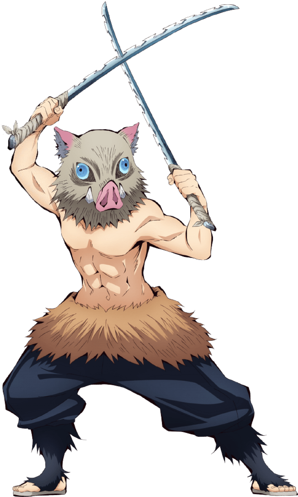

Go Back
Inosuke Hashibira
Breathing style: BEAST BREATHING
Inosuke Hashibira is one of the main protagonists of Demon Slayer: Kimetsu no Yaiba and, along with Zenitsu Agatsuma, a traveling companion of Tanjiro Kamado and Nezuko Kamado. He is also a Demon Slayer in the Demon Slayer Corps.